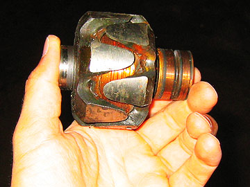

On BMW motorcycles, the excitation circuit sends a voltage from the voltage regulator, through the rotor brushes and into the rotor windings. The voltage flows through the rotor windings and electromagnetic waves (flux) forms around the rotor windings (you can't see 'em, but they're there). The flux has a north pole and a south pole. The flux rotates as the rotor rotates. When the invisible flux passes through the stator (stationary) windings, a voltage is induced in the stator windings.
There are three sets (phases) of windings in the stator. As the north and south pole of the rotor's flux alternately pass through the stator's three phase windings, an alternating positive and negative voltage (alternating current AC) is induced in each phase winding.
The 3-phase AC output of the stator is conducted into the rectifier (diode board). A diode acts like an electronic check valve and allows only the positive voltage from the stator's 3-phase AC output to flow through. The diode board output voltage polarity is always positive (direct current DC).
The DC output of the diode board is conducted into the storage battery for later use when the engine isn't running or to augment the electrical power (watts) available for when the engine is running at low speed and big system electrical loads (horn, lights, etc.) are switched on.
The faster the rotor spins, the greater the induced stator voltage. The voltage regulator acts to reduce the excitation voltage supplied by the voltage regulator to the rotor. Less excitation voltage equals less flux and less induced voltage in the stator windings. So, as the rotor spins faster, the voltage regulator reduces the voltage supplied to the rotor which ensures that there is not too much voltage induced into the stator. In this way, the voltage regulator controls the alternator output voltage level.
Tip: The red light on the speedo face is in the excitation circuit for the rotor. If the bulb is the wrong wattage or is burned out, then the alternator output will either be wrong or non-existent. Also, if the red gen light does not come on with the key on and engine off, then there is a break in the excitation circuit caused by burned out bulb, broken rotor wire, brush not making contact with slip ring, voltage not supplied from voltage regulator to rotor, bad circuit connection, etc..
Tip:If the brushes are dirty or the brush holders or rotor slip-rings are dirty then you could get diminished alternator output.